Goal: test whether Wei and the stabilized Star Moth can share a frame without costume, gaze, or mascot identity drift.
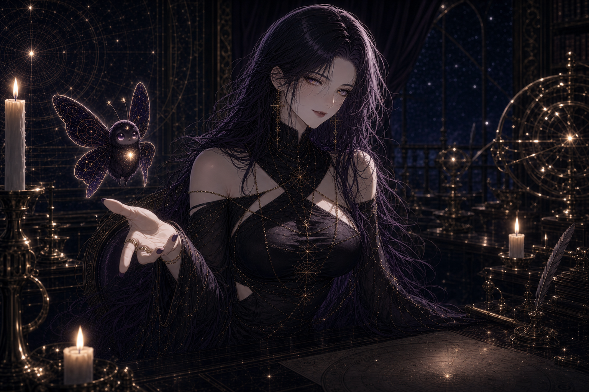
01開場引導 / Opening Invitation
02銳利判斷 / Sharp Judgment
03溫柔過渡 / Gentle Transition
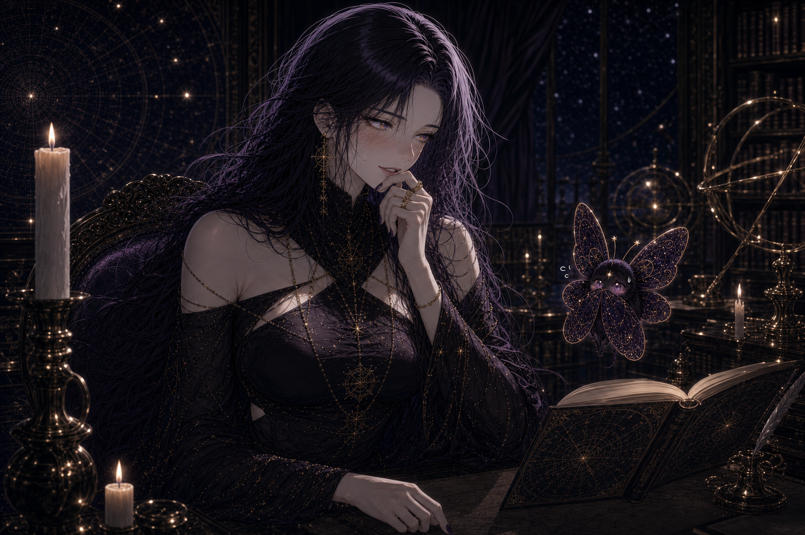
04尷尬反差 / Awkward Contrast
05翻書 / Reading Book
06收書 / Closing Book
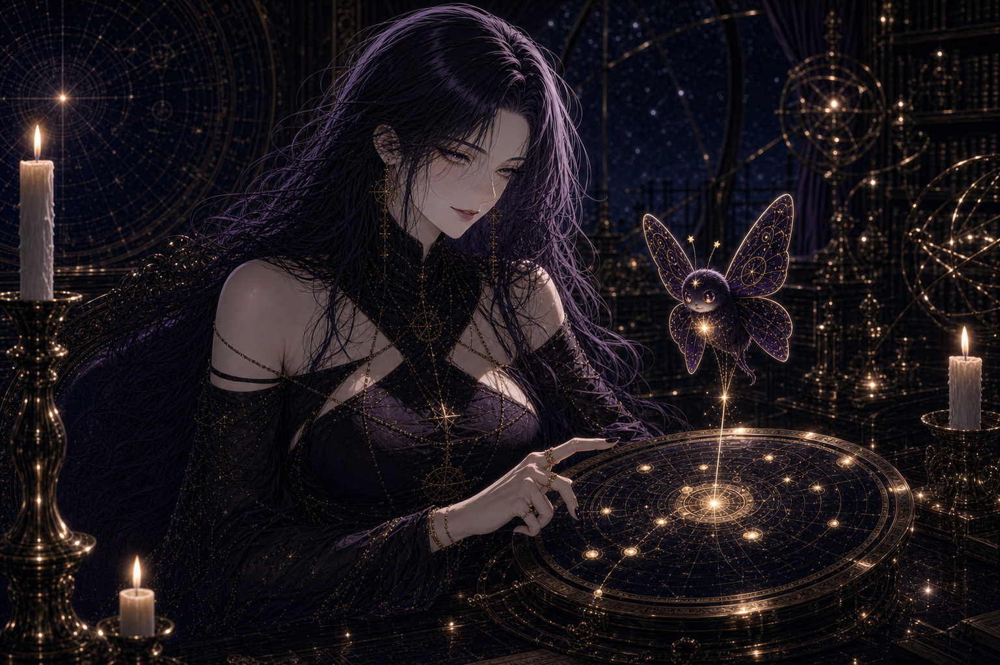
07演算揭曉 / Calculation Reveal
Generated 9:16 Assets
New vertical 1080×1920 assets prepared for Shotlab / Seedance reference use, plus the previous Astraea sequence.
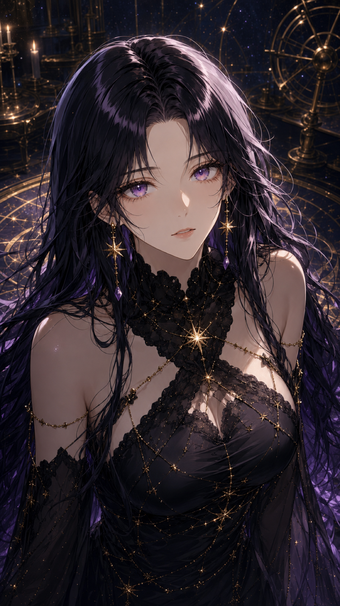
A01Astraea Eye Closeup
A02Astraea Candle Half Body
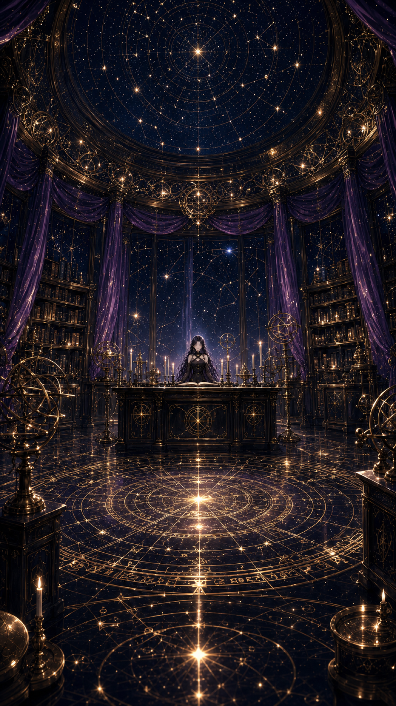
A03Observatory Wide View
A04Book Hand Closeup
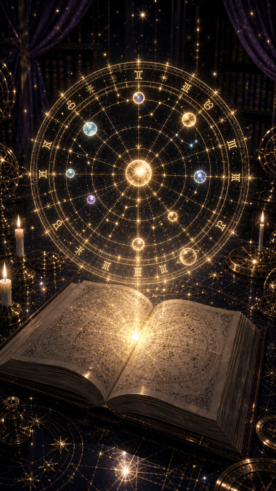
A05Chart Emerging
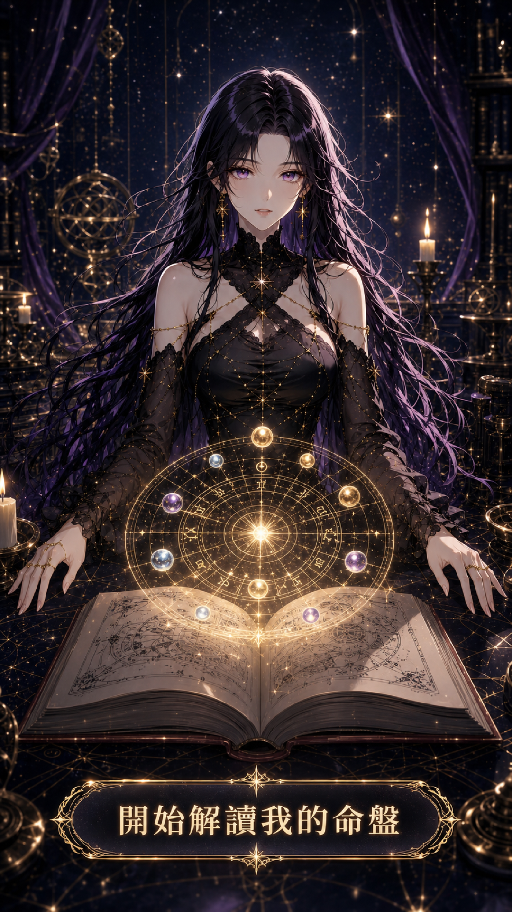
A06Astraea Final Chart
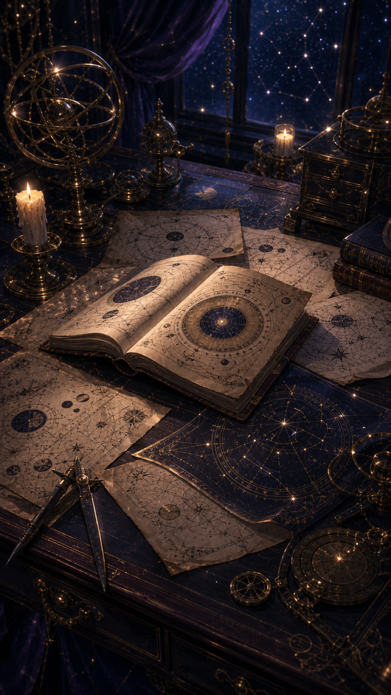
W01Astrology Desk Pages
W02Wei Seated at Desk
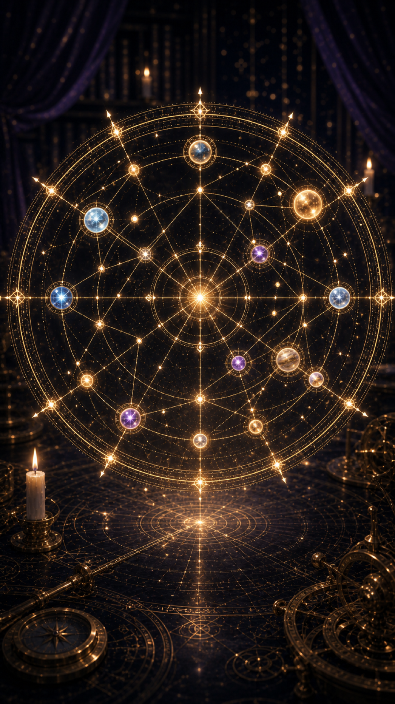
W03Natal Chart Reference
W04Brass Orrery
W05Astrology Book Closeup
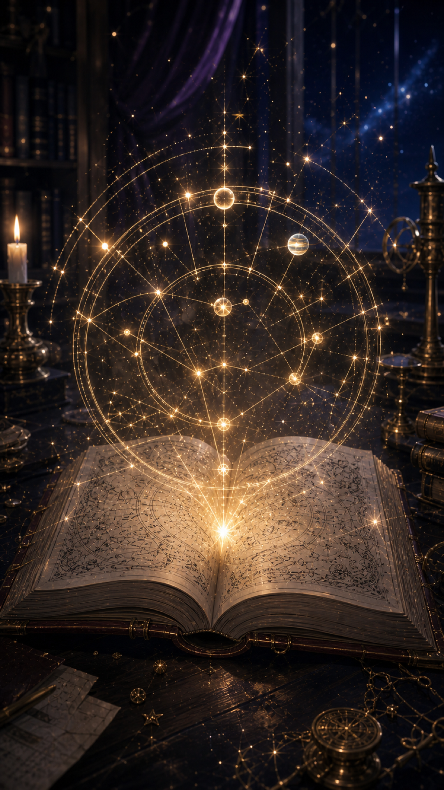
W06Chart Rising From Book
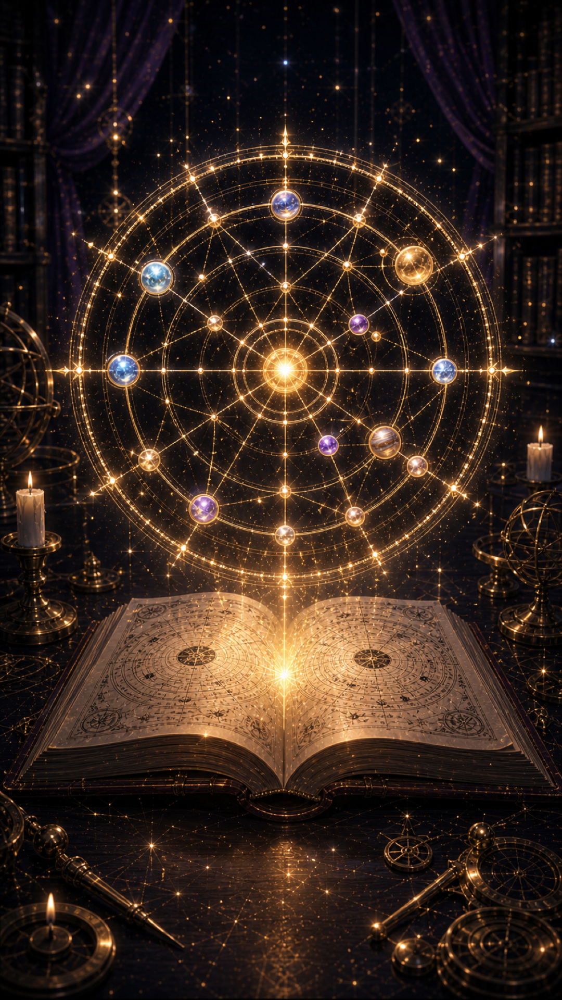
W07Completed Glowing Chart